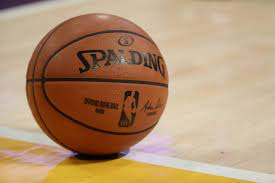

As an avid basketball fan, the NBA is a big part of my life. I love the excitement, the skill, and the drama of the game. I'm a dedicated fan of the Miami Heat. Whether they’re winning or facing challenges, I always support my team. Watching games, analyzing plays, and following player stats are some of my favorite pastimes.

Photography is another passion of mine. I enjoy capturing moments and telling stories through my photos. Whether it's the serene beauty of nature, the vibrant energy of city streets, or candid moments with friends and family, I find joy in freezing these moments in time. Photography allows me to express my creativity and see the world from different perspectives.